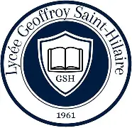
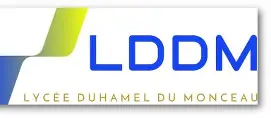
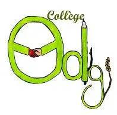

- Les objectifs de ce portfolio -
- Qui suis-je? -
Je suis actuellement étudiant en développement informatique au lycée Geoffroi Saint-Hilaire, à Étampes. Cette formation me permet d’acquérir des bases solides en programmation, conception web et gestion de projets numériques. Mon objectif à long terme est de devenir Webmaster, un métier qui allie compétences techniques et sens de l’organisation. Pour atteindre ce but, je souhaite poursuivre mes études jusqu’au Master en développement web, afin de consolider mes connaissances, approfondir mes compétences et me préparer pleinement aux responsabilités liées à la gestion et à l’optimisation de sites internet.
- Mon parcours -
Lycée Geoffroy Saint-Hilaire

Lycée Geoffroy Saint-Hilaire
Lycée Duhamel Du Monceau

Lycée Duhamel Du Monceau
Lycée Marie Laurencin
Lycée Marie Laurencin
Collège Olympe De Gouges

Collège Olympe De Gouges
- Mes Aspirations professionels -
À l’avenir, mon objectif est de devenir webmaster, en alliant compétences techniques et sens de l’organisation. Pour atteindre ce but, je souhaite poursuivre mes études en informatique jusqu’au Master 2 en développement informatique. Dans un premier temps, je prévois d’intégrer une licence professionnelle à l’Université d’Évry, ce qui me permettra d’acquérir des connaissances spécialisées et une expérience pratique dans le domaine du web. Par la suite, je souhaite continuer mon parcours universitaire au sein de la même institution afin d’obtenir mon diplôme de Master 2, consolidant ainsi mon expertise et me préparant pleinement à exercer le métier de webmaster.
- Ma motivation -
Depuis plusieurs années maintenant, je nourris une véritable passion pour le développement sous toutes ses formes. J’ai commencé à créer mes premiers sites web dès la classe de seconde, en 2021, ce qui m’a permis de découvrir concrètement le monde de la programmation et du design numérique. Depuis cette période, je m’efforce de renforcer et diversifier mes compétences en explorant différents langages de programmation et technologies. Cette démarche autodidacte me permet non seulement d’élargir mes connaissances, mais aussi de développer une polyvalence essentielle pour répondre aux multiples exigences du métier de développeur et, à terme, de webmaster.